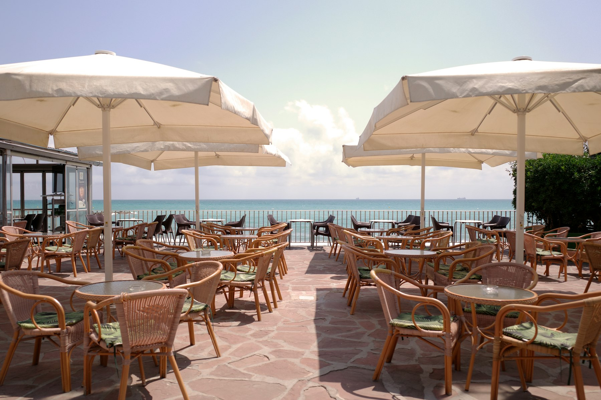

The beach is
five yards away
An Irish pub on the Paseo Marítimo in Bajondillo, Torremolinos — the seafront side. A proper pint, fast service, and a bell that rings when someone leaves a tip.
4.3 from 1517 Google reviews
What people come for
Pints and
the view
Drawn from the venue’s own Google reviews.
- 01A great pint of Guinness
- 02Beachfront tables
- 03Fast service
- 04The tip bell
On the
seafront


In their words
1517 reviews,
4.3 stars
“The All Blacks pub is great. The staff are super helpful and pleasant. Don't forget to leave a tip, because they will then ring the bell acknowledging it. The beach is literally 5 yards away and anywhere you get get a great pint of Guinness must be good.”
“If you're looking for a chill spot right on the beach, this is it. The All Black Irish Pub has a fantastic location and a really relaxed vibe. Yes, the prices are on the more expensive side, but the fast service and the incredible beachfront view make it a good spot to relax. I stopped during the day for a beer or 2 af”